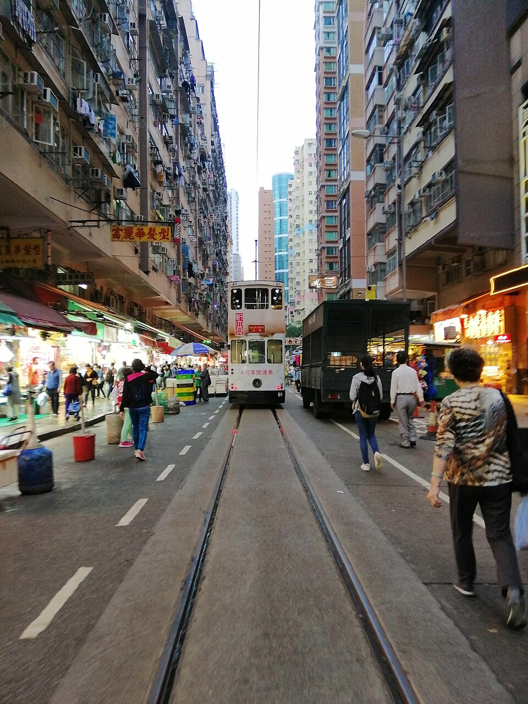
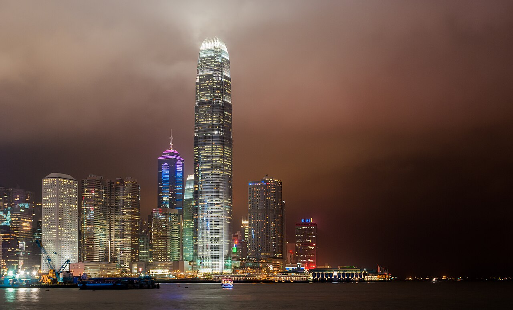
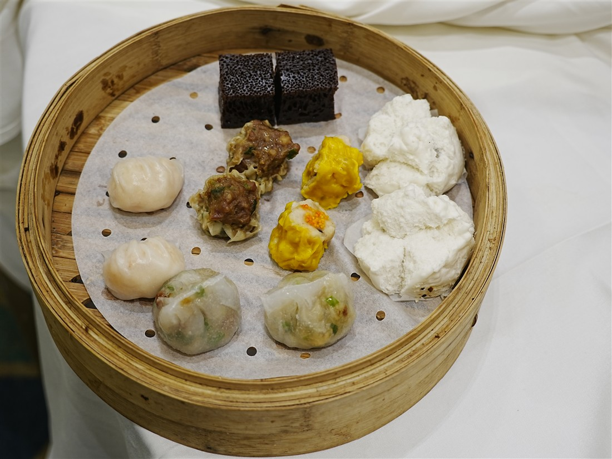

North Point
On Chun Yeung Street, the tram shares a narrow market street with vegetable stalls and shoppers. Walk the pavement first, then ride upstairs for a second look.

Take the ferry across Victoria Harbour. From the water, you can see how little room there is between the towers and the hills.
Explore the cityHong Kong stretches from the Kowloon Peninsula and the New Territories to islands along the South China Sea. Three stops give you a feel for its pace.

On Chun Yeung Street, the tram shares a narrow market street with vegetable stalls and shoppers. Walk the pavement first, then ride upstairs for a second look.

In Cantonese, yum cha means “drink tea”. Make time for a pot with har gow, translucent prawn dumplings, and char siu bao, soft buns filled with barbecued pork.
On the southeastern side of Hong Kong Island, a footpath follows the ridge above Shek O. The breaks in the trees open onto headlands, beaches and open sea.
An easy first outing links two waterfronts, with time for tea along the way.
Start on the Kowloon promenade near the Clock Tower. Look south across the harbour for the towers of Central and the green shoulder of Victoria Peak.
Board the Central-bound ferry at Tsim Sha Tsui. After landing on Hong Kong Island, follow the footbridges into Central and find a teahouse for dim sum.
Walk west from Central towards Hollywood Road. Around Man Mo Temple, short stairways connect the hillside streets to the tram line below.